Topic 18: Intro to Linear Regression#
onl01-dtsc-ft-022221
04/07/21
Questions?#
Intro to Statistical Learning#
Types of Data in Statistical Learning#
In the context of Statistical learning, there are two main types of data:
Dependent variables: data that can be controlled directly (other names: outcome variables, target variables, response variables)
Independent variables: data that cannot be controlled directly (other names: predictor variables, input variables, explanatory variables, features)
Simple Linear Regression#
# !pip install -U fsds
from fsds.imports import *
import warnings
warnings.filterwarnings('ignore')
pd.set_option('display.max_columns',0)
plt.style.use('seaborn-notebook')
fsds v0.3.2 loaded. Read the docs: https://fs-ds.readthedocs.io/en/latest/
| Handle | Package | Description |
|---|---|---|
| dp | IPython.display | Display modules with helpful display and clearing commands. |
| fs | fsds | Custom data science bootcamp student package |
| mpl | matplotlib | Matplotlib's base OOP module with formatting artists |
| plt | matplotlib.pyplot | Matplotlib's matlab-like plotting module |
| np | numpy | scientific computing with Python |
| pd | pandas | High performance data structures and tools |
| sns | seaborn | High-level data visualization library based on matplotlib |
# ## ORIGINAL DATASET (AMES HOUSE DATA)
# ## Load in ames dataset
# df = fs.datasets.load_ames_train(subset=True)
# ## Save Columns of Interest
# X = df['GrLivArea'].copy()
# y = df['SalePrice'].copy()
# sns.regplot(X,y)
### NEW MOVIE DATASET
## Thanks to Johnny Dryma for letting us use his data
movie_data_url = "https://raw.githubusercontent.com/Drymander/dsc-phase-1-project/master/data/2012-2019%20FULL.csv"
dfm = pd.read_csv(movie_data_url,index_col=0)
## List of cols that need processsing before use
cols_need_processing=['genres','production_companies',
'belongs_to_collection']
## Save only the columns of interest
df = dfm[['id','imdb_id','original_title','title','genres','mpaa_rating',
'production_companies','release_date','runtime','budget','revenue',
'vote_count','vote_average','popularity','adult','original_language']].copy()
del dfm
## Keep only movies with financial data
df=df[(df['budget']>0) & (df['revenue']>0)]
## Feature Engineering
df['profit'] = df['revenue'] - df['budget']
df['ROI'] = df['profit']/df['budget']
## Removing Extreme values for class purposes
# df=df[df['ROI']<1000]
## Drop nulls & reset index
df.dropna(inplace=True)
df.reset_index(inplace=True,drop=True)
display(df.head(),df.info())
<class 'pandas.core.frame.DataFrame'>
RangeIndex: 1300 entries, 0 to 1299
Data columns (total 18 columns):
# Column Non-Null Count Dtype
--- ------ -------------- -----
0 id 1300 non-null int64
1 imdb_id 1300 non-null object
2 original_title 1300 non-null object
3 title 1300 non-null object
4 genres 1300 non-null object
5 mpaa_rating 1300 non-null object
6 production_companies 1300 non-null object
7 release_date 1300 non-null object
8 runtime 1300 non-null float64
9 budget 1300 non-null int64
10 revenue 1300 non-null int64
11 vote_count 1300 non-null int64
12 vote_average 1300 non-null float64
13 popularity 1300 non-null float64
14 adult 1300 non-null bool
15 original_language 1300 non-null object
16 profit 1300 non-null int64
17 ROI 1300 non-null float64
dtypes: bool(1), float64(4), int64(5), object(8)
memory usage: 174.1+ KB
| id | imdb_id | original_title | title | genres | mpaa_rating | production_companies | release_date | runtime | budget | revenue | vote_count | vote_average | popularity | adult | original_language | profit | ROI | |
|---|---|---|---|---|---|---|---|---|---|---|---|---|---|---|---|---|---|---|
| 0 | 24428 | tt0848228 | The Avengers | The Avengers | [{'id': 878, 'name': 'Science Fiction'}, {'id'... | PG-13 | [{'id': 420, 'logo_path': '/hUzeosd33nzE5MCNsZ... | 4/25/2012 | 143.0 | 220000000 | 1518815515 | 24252 | 7.7 | 151.095 | False | en | 1298815515 | 5.903707 |
| 1 | 50620 | tt1673434 | The Twilight Saga: Breaking Dawn - Part 2 | The Twilight Saga: Breaking Dawn - Part 2 | [{'id': 12, 'name': 'Adventure'}, {'id': 14, '... | PG-13 | [{'id': 491, 'logo_path': '/rUp0lLKa1pr4UsPm8f... | 11/13/2012 | 115.0 | 120000000 | 829000000 | 6978 | 6.5 | 73.226 | False | en | 709000000 | 5.908333 |
| 2 | 82690 | tt1772341 | Wreck-It Ralph | Wreck-It Ralph | [{'id': 10751, 'name': 'Family'}, {'id': 16, '... | PG | [{'id': 6125, 'logo_path': '/tVPmo07IHhBs4Huil... | 11/1/2012 | 101.0 | 165000000 | 471222889 | 9690 | 7.3 | 70.213 | False | en | 306222889 | 1.855896 |
| 3 | 57214 | tt1636826 | Project X | Project X | [{'id': 35, 'name': 'Comedy'}] | R | [{'id': 1885, 'logo_path': '/xlvoOZr4s1Pygosrw... | 3/1/2012 | 88.0 | 12000000 | 100000000 | 4399 | 6.7 | 67.687 | False | en | 88000000 | 7.333333 |
| 4 | 49051 | tt0903624 | The Hobbit: An Unexpected Journey | The Hobbit: An Unexpected Journey | [{'id': 12, 'name': 'Adventure'}, {'id': 14, '... | PG-13 | [{'id': 21, 'logo_path': '/aOWKh4gkNrfFZ3Ep7n0... | 11/26/2012 | 169.0 | 250000000 | 1021103568 | 14539 | 7.3 | 61.052 | False | en | 771103568 | 3.084414 |
None
## Scatter Plots for Linearity Check
priceFmt = mpl.ticker.StrMethodFormatter("${x:,.0f}")
roiFmt = mpl.ticker.StrMethodFormatter("{x:,.2f}%")
def plot_data(X='budget',y='revenue',data=df,fit_reg=False):
ax = sns.regplot(x=X,y=y,data=data,fit_reg=fit_reg)
ax.yaxis.set_major_formatter(priceFmt)
fig=ax.get_figure()
return fig,ax
plot_data()
(<Figure size 576x396 with 1 Axes>,
<AxesSubplot:xlabel='budget', ylabel='revenue'>)
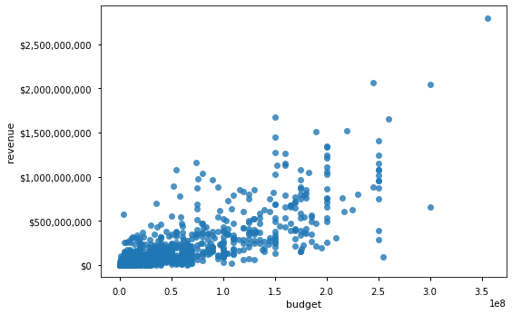
Our “worst model” is using the mean.#
fig,ax = plot_data()
ax.axhline(df['revenue'].mean(),color='red',label='mean',ls=':')
ax.legend()
<matplotlib.legend.Legend at 0x7fe0b940dc40>
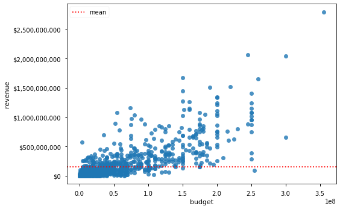

The following 3 equations below are all equivalent.
Judging Our Model#
Error/Loss#

R-Squared#
The \(R^2\) or Coefficient of determination is a statistical measure that is used to assess the goodness of fit of a regression model
The mathematical formula to calculate R-Squared for a linear regression line is in terms of squared errors for the fitted model and the baseline model. It’s calculated as :
85% of the variations in dependent variable \(y\) are explained by the independent variable in our model.

Linear Regression#
Linear Regression Assumptions#
1. Linearity#
The linearity assumptions requires that there is a linear relationship between the response variable (Y) and predictor (X). Linear means that the change in Y by 1-unit change in X, is constant.
The linearity assumption can best be tested with scatter plots
Note: As an extra measure, it is also important to check for outliers as the presence of outliers in the data can have a major impact on the model.

2. Normality#
The normality assumption states that the model residuals should follow a normal distribution
Note that the normality assumption talks about the model residuals and not about the distributions of the variables! In general, data scientists will often check the distributions of the variables as well. The easiest way to check for the normality assumption is with histograms or a Q-Q-Plots.
Q-Q Plots#
In statistics, a Q–Q (quantile-quantile) plot is a probability plot, which is a graphical method for comparing two probability distributions by plotting their quantiles against each other.

3. Homoscedasticity#
Heteroscedasticity (also spelled heteroskedasticity) refers to the circumstance in which the dependent variable is unequal across the range of values of the predictor(s).

As a first check, always looks at plots for the residuals. If you see anything similar to what is shown below, you are violating one or more assumptions and the results will not be reliable.

Linear Regression in Statsmodels#
## Importing our study group functions
%load_ext autoreload
%autoreload 2
import sys
py_folder = "../../py_files/" # CHANGE TO REFECT YOUR NOTEBOOKS LOCATION COMPARED TO THE PY_FILES FOLDER
sys.path.append(py_folder)
import functions_SG as sg
import statsmodels.api as sm
import statsmodels.formula.api as smf
from scipy import stats
Checking the Assumptions#
## Check Linearity
plot_data(fit_reg=True)
(<Figure size 576x396 with 1 Axes>,
<AxesSubplot:xlabel='budget', ylabel='revenue'>)
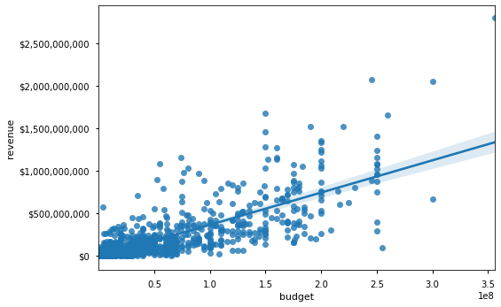
## check if X is normally distributed
sg.plot_distribution(df, 'budget')
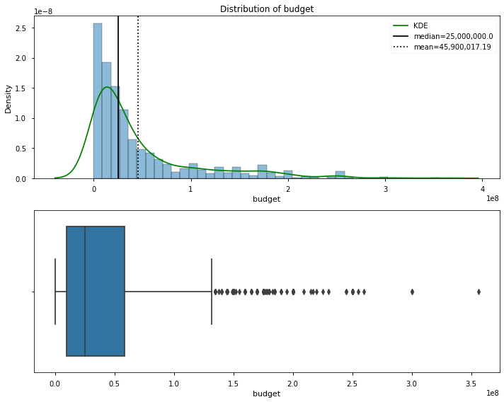
[i] Distribution Stats:
Skew = 1.92
Kurtosis = 3.53
N = 1,300
NormaltestResult(statistic=484.0039917188565, pvalue=7.940879186763512e-106)
- p<.05: The distribution is NOT normally distributed.
(<Figure size 720x576 with 2 Axes>,
array([<AxesSubplot:title={'center':'Distribution of budget'}, xlabel='budget', ylabel='Density'>,
<AxesSubplot:xlabel='budget'>], dtype=object))
## check if y is normally distributed
sg.plot_distribution(df, 'revenue')
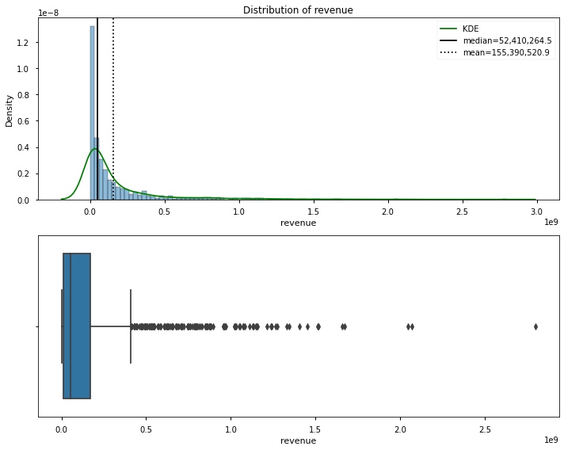
[i] Distribution Stats:
Skew = 3.45
Kurtosis = 16.74
N = 1,300
NormaltestResult(statistic=987.489340936392, pvalue=3.7103437433591323e-215)
- p<.05: The distribution is NOT normally distributed.
(<Figure size 720x576 with 2 Axes>,
array([<AxesSubplot:title={'center':'Distribution of revenue'}, xlabel='revenue', ylabel='Density'>,
<AxesSubplot:xlabel='revenue'>], dtype=object))
So… our data is not normally distributed, do we need to do anything about this right now? - A: Not just yet, technically we only need our RESIDUALS to be normally distributed
Model 1#
Let’s make our baseline model with statsmodels formula OLS
## Make our formula-based Regression
import statsmodels.formula.api as smf
import statsmodels.api as sm
f = "revenue~budget"
model = smf.ols(f,df).fit()
model.summary()
| Dep. Variable: | revenue | R-squared: | 0.621 |
|---|---|---|---|
| Model: | OLS | Adj. R-squared: | 0.621 |
| Method: | Least Squares | F-statistic: | 2127. |
| Date: | Wed, 07 Apr 2021 | Prob (F-statistic): | 9.19e-276 |
| Time: | 14:21:14 | Log-Likelihood: | -26440. |
| No. Observations: | 1300 | AIC: | 5.288e+04 |
| Df Residuals: | 1298 | BIC: | 5.289e+04 |
| Df Model: | 1 | ||
| Covariance Type: | nonrobust |
| coef | std err | t | P>|t| | [0.025 | 0.975] | |
|---|---|---|---|---|---|---|
| Intercept | -1.858e+07 | 5.93e+06 | -3.136 | 0.002 | -3.02e+07 | -6.96e+06 |
| budget | 3.7903 | 0.082 | 46.120 | 0.000 | 3.629 | 3.951 |
| Omnibus: | 708.628 | Durbin-Watson: | 1.877 |
|---|---|---|---|
| Prob(Omnibus): | 0.000 | Jarque-Bera (JB): | 12328.555 |
| Skew: | 2.134 | Prob(JB): | 0.00 |
| Kurtosis: | 17.470 | Cond. No. | 9.35e+07 |
Notes:
[1] Standard Errors assume that the covariance matrix of the errors is correctly specified.
[2] The condition number is large, 9.35e+07. This might indicate that there are
strong multicollinearity or other numerical problems.
Statsmodels OLS Results - Except From Canvas Lesson#
Here is a brief description of these measures:
The left part of the first table gives some specifics on the data and the model:
Dep. Variable: Singular. Which variable is the point of interest of the model
Model: Technique used, an abbreviated version of Method (see methods for more).
Method: The loss function optimized in the parameter selection process. Least Squares since it picks the parameters that reduce the training error. This is also known as Mean Square Error [MSE].
No. Observations: The number of observations used by the model, or size of the training data.
Degrees of Freedom Residuals: Degrees of freedom of the residuals, which is the number of observations – number of parameters. Intercept is a parameter. The purpose of Degrees of Freedom is to reflect the impact of descriptive/summarizing statistics in the model, which in regression is the coefficient. Since the observations must “live up” to these parameters, they only have so many free observations, and the rest must be reserved to “live up” to the parameters’ prophecy. This internal mechanism ensures that there are enough observations to match the parameters.
Degrees of Freedom Model: The number of parameters in the model (not including the constant/intercept term if present)
Covariance Type: Robust regression methods are designed to be not overly affected by violations of assumptions by the underlying data-generating process. Since this model is Ordinary Least Squares, it is non-robust and therefore highly sensitive to outliers.
The right part of the first table shows the goodness of fit:
R-squared: The coefficient of determination, the Sum Squares of Regression divided by Total Sum Squares. This translates to the percent of variance explained by the model. The remaining percentage represents the variance explained by error, the E term, the part that model and predictors fail to grasp.
Adj. R-squared: Version of the R-Squared that penalizes additional independent variables.
F-statistic: A measure of how significant the fit is. The mean squared error of the model divided by the mean squared error of the residuals. Feeds into the calculation of the P-Value.
Prob (F-statistic) or P-Value: The probability that a sample like this would yield the above statistic, and whether the model’s verdict on the null hypothesis will consistently represent the population. Does not measure effect magnitude, instead measures the integrity and consistency of this test on this group of data.
Log-likelihood: The log of the likelihood function.
AIC: The Akaike Information Criterion. Adjusts the log-likelihood based on the number of observations and the complexity of the model. Penalizes the model selection metrics when more independent variables are added.
BIC: The Bayesian Information Criterion. Similar to the AIC, but has a higher penalty for models with more parameters. Penalizes the model selection metrics when more independent variables are added.
The second table shows the coefficient report:
coef: The estimated value of the coefficient. By how much the model multiplies the independent value by.
std err: The basic standard error of the estimate of the coefficient. Average distance deviation of the points from the model, which offers a unit relevant way to gauge model accuracy.
t: The t-statistic value. This is a measure of how statistically significant the coefficient is.
P > |t|: P-value that the null-hypothesis that the coefficient = 0 is true. If it is less than the confidence level, often 0.05, it indicates that there is a statistically significant relationship between the term and the response.
[95.0% Conf. Interval]: The lower and upper values of the 95% confidence interval. Specific range of the possible coefficient values.
The third table shows information about the residuals, autocorrelation, and multicollinearity:
Skewness: A measure of the symmetry of the data about the mean. Normally-distributed errors should be symmetrically distributed about the mean (equal amounts above and below the line). The normal distribution has 0 skew.
Kurtosis: A measure of the shape of the distribution. Compares the amount of data close to the mean with those far away from the mean (in the tails), so model “peakiness”. The normal distribution has a Kurtosis of 3, and the greater the number, the more the curve peaks.
Omnibus D’Angostino’s test: Provides a combined statistical test for the presence of skewness and kurtosis.
Prob(Omnibus): The above statistic turned into a probability
Jarque-Bera: A different test of the skewness and kurtosis
Prob (JB): The above statistic turned into a probability
Durbin-Watson: A test for the presence of autocorrelation (that the errors are not independent), which is often important in time-series analysis
Cond. No: A test for multicollinearity (if in a fit with multiple parameters, the parameters are related to each other).
The interpretation of some of these measures will be explained in the next lessons. For others, you’ll get a better insight into them in the lessons on statistics.
Diagnosing Regressions in Statsmodels#
Use Q-Q plots to check for the normality in residual errors
Check for heteroscedasticity using the Goldfeld-Quandt test to check whether the variance is the same in 2 samples
model.resid
0 7.035403e+08
1 3.927510e+08
2 -1.355879e+08
3 7.309946e+07
4 9.212041e+07
...
1295 -1.091696e+07
1296 -2.892515e+07
1297 1.875249e+07
1298 -1.769080e+07
1299 1.858245e+07
Length: 1300, dtype: float64
## QQ Plot
sm.graphics.qqplot(model.resid,dist=stats.norm,line='45',fit=True);
plt.grid()
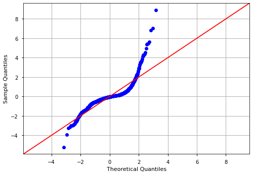
sns.histplot(model.resid,kde=True)
<AxesSubplot:ylabel='Count'>
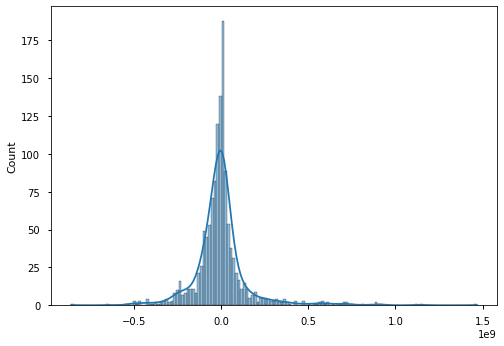
## plot_regress_exog
sm.graphics.plot_regress_exog(model,'budget',plt.figure(figsize=(12,8)));

Model 2#
We will attempt to improve the model by removing outliers from our data to better meet the assumption of normality.
## Check for outliers
from scipy import stats
def find_outliers_z(data):
"""Detects outliers using the Z-score>3 cutoff.
Returns a boolean Series where True=outlier"""
zFP = np.abs(stats.zscore(data))
zFP = pd.Series(zFP, index=data.index)
idx_outliers = zFP > 3
return idx_outliers
def find_outliers_IQR(data):
"""Detects outliers using the 1.5*IQR thresholds.
Returns a boolean Series where True=outlier"""
res = data.describe()
q1 = res['25%']
q3 = res['75%']
thresh = 1.5*(q3-q1)
idx_outliers =(data < (q1-thresh)) | (data > (q3+thresh))
return idx_outliers
Remove Z-score outliers#
## Get X outliers
X_outliers_Z = find_outliers_z(df['budget'])
X_outliers_Z.sum()
24
## Get y outliers
y_outliers_Z = find_outliers_z(df['revenue'])
y_outliers_Z.sum()
36
## Combine outliers
idx_outliers = X_outliers_Z | y_outliers_Z
idx_outliers.sum()
48
sg.plot_distribution(df,col='budget')
[i] Distribution Stats:
Skew = 1.92
Kurtosis = 3.53
N = 1,300
NormaltestResult(statistic=484.0039917188565, pvalue=7.940879186763512e-106)
- p<.05: The distribution is NOT normally distributed.
(<Figure size 720x576 with 2 Axes>,
array([<AxesSubplot:title={'center':'Distribution of budget'}, xlabel='budget', ylabel='Density'>,
<AxesSubplot:xlabel='budget'>], dtype=object))
### check data without outliers
sg.plot_distribution(df[~idx_outliers],col='budget')
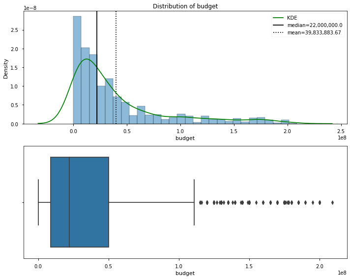
[i] Distribution Stats:
Skew = 1.74
Kurtosis = 2.37
N = 1,252
NormaltestResult(statistic=391.2327346256012, pvalue=1.1088967384152534e-85)
- p<.05: The distribution is NOT normally distributed.
(<Figure size 720x576 with 2 Axes>,
array([<AxesSubplot:title={'center':'Distribution of budget'}, xlabel='budget', ylabel='Density'>,
<AxesSubplot:xlabel='budget'>], dtype=object))
### check data without outliers
sg.plot_distribution(df[~idx_outliers], col='revenue')
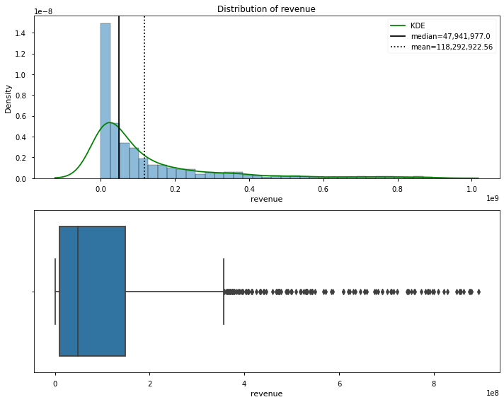
[i] Distribution Stats:
Skew = 2.29
Kurtosis = 5.36
N = 1,252
NormaltestResult(statistic=588.7858538392409, pvalue=1.4020914063766169e-128)
- p<.05: The distribution is NOT normally distributed.
(<Figure size 720x576 with 2 Axes>,
array([<AxesSubplot:title={'center':'Distribution of revenue'}, xlabel='revenue', ylabel='Density'>,
<AxesSubplot:xlabel='revenue'>], dtype=object))
Compare to IQR Outliers#
## Get X outliers
X_outliers_IQR = find_outliers_IQR(df['budget'])
X_outliers_IQR.sum()
128
## Get y outliers
y_outliers_IQR = find_outliers_IQR(df['revenue'])
y_outliers_IQR.sum()
132
## Combine all outleirs to one series
idx_outliers_IQR = (X_outliers_IQR | y_outliers_IQR)
idx_outliers_IQR.sum()
174
### check data without outliers
sg.plot_distribution(df[~idx_outliers_IQR],col='budget');
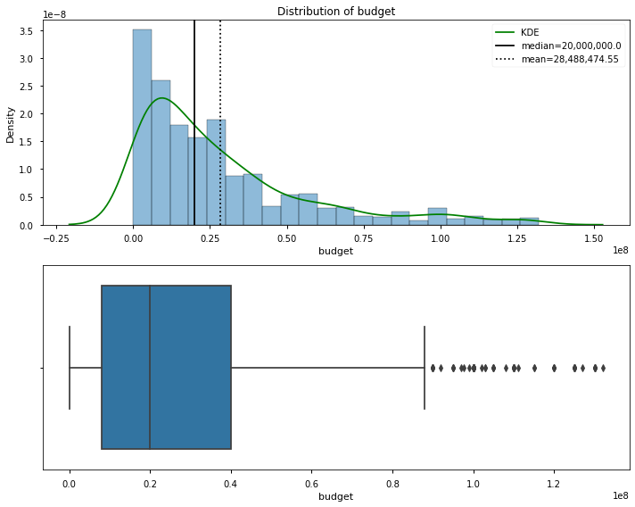
[i] Distribution Stats:
Skew = 1.57
Kurtosis = 2.14
N = 1,126
NormaltestResult(statistic=313.2182524156148, pvalue=9.67209764387155e-69)
- p<.05: The distribution is NOT normally distributed.
sg.plot_distribution(df[~idx_outliers_IQR],col='revenue');
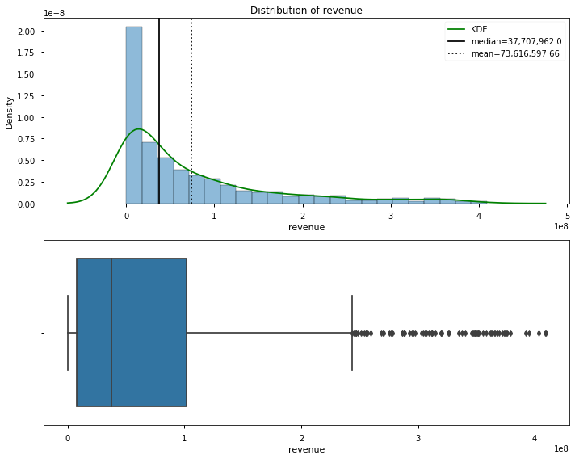
[i] Distribution Stats:
Skew = 1.67
Kurtosis = 2.25
N = 1,126
NormaltestResult(statistic=335.77564742070587, pvalue=1.2224879411306002e-73)
- p<.05: The distribution is NOT normally distributed.
## Create df_clean
df_clean = df[~idx_outliers_IQR].copy()
df_clean
| id | imdb_id | original_title | title | genres | mpaa_rating | production_companies | release_date | runtime | budget | revenue | vote_count | vote_average | popularity | adult | original_language | profit | ROI | |
|---|---|---|---|---|---|---|---|---|---|---|---|---|---|---|---|---|---|---|
| 3 | 57214 | tt1636826 | Project X | Project X | [{'id': 35, 'name': 'Comedy'}] | R | [{'id': 1885, 'logo_path': '/xlvoOZr4s1Pygosrw... | 3/1/2012 | 88.0 | 12000000 | 100000000 | 4399 | 6.7 | 67.687 | False | en | 88000000 | 7.333333 |
| 10 | 70981 | tt1446714 | Prometheus | Prometheus | [{'id': 878, 'name': 'Science Fiction'}, {'id'... | R | [{'id': 444, 'logo_path': '/42UPdZl6B2cFXgNUAS... | 5/30/2012 | 124.0 | 130000000 | 403170142 | 9183 | 6.5 | 46.651 | False | en | 273170142 | 2.101309 |
| 11 | 76492 | tt0837562 | Hotel Transylvania | Hotel Transylvania | [{'id': 16, 'name': 'Animation'}, {'id': 35, '... | PG | [{'id': 5, 'logo_path': '/71BqEFAF4V3qjjMPCpLu... | 9/20/2012 | 91.0 | 85000000 | 358375603 | 6541 | 6.9 | 43.149 | False | en | 273375603 | 3.216184 |
| 14 | 72331 | tt1611224 | Abraham Lincoln: Vampire Hunter | Abraham Lincoln: Vampire Hunter | [{'id': 28, 'name': 'Action'}, {'id': 14, 'nam... | R | [{'id': 1038, 'logo_path': '/o62j8ZNXmRTrq6Thv... | 6/20/2012 | 94.0 | 69000000 | 116471580 | 2462 | 5.6 | 41.438 | False | en | 47471580 | 0.687994 |
| 15 | 71552 | tt1605630 | American Reunion | American Reunion | [{'id': 35, 'name': 'Comedy'}] | R | [{'id': 33, 'logo_path': '/8lvHyhjr8oUKOOy2dKX... | 4/4/2012 | 113.0 | 50000000 | 234989584 | 3457 | 6.2 | 41.098 | False | en | 184989584 | 3.699792 |
| ... | ... | ... | ... | ... | ... | ... | ... | ... | ... | ... | ... | ... | ... | ... | ... | ... | ... | ... |
| 1295 | 403300 | tt5827916 | A Hidden Life | A Hidden Life | [{'id': 18, 'name': 'Drama'}, {'id': 10752, 'n... | PG-13 | [{'id': 264, 'logo_path': '/fA90qwUKgPhMONqtwY... | 12/11/2019 | 174.0 | 9000000 | 4612788 | 370 | 7.2 | 15.434 | False | en | -4387212 | -0.487468 |
| 1296 | 520900 | tt6439020 | The Personal History of David Copperfield | The Personal History of David Copperfield | [{'id': 18, 'name': 'Drama'}, {'id': 35, 'name... | PG | [{'id': 7493, 'logo_path': '/452FO4LcI6lA6bfgl... | 11/7/2019 | 119.0 | 15600000 | 11620337 | 211 | 6.7 | 15.076 | False | en | -3979663 | -0.255107 |
| 1297 | 616584 | tt10521814 | K-12 | K-12 | [{'id': 10402, 'name': 'Music'}, {'id': 27, 'n... | R | [{'id': 65827, 'logo_path': None, 'name': 'Atl... | 9/5/2019 | 92.0 | 50000 | 359377 | 171 | 7.6 | 14.822 | False | en | 309377 | 6.187540 |
| 1298 | 619265 | tt10555920 | The Cabin House | The Cabin House | [{'id': 27, 'name': 'Horror'}, {'id': 53, 'nam... | R | [{'id': 74190, 'logo_path': None, 'name': 'G.P... | 10/31/2019 | 120.0 | 13000000 | 13000000 | 0 | 0.0 | 2.071 | False | en | 0 | 0.000000 |
| 1299 | 630331 | tt10931434 | Cin-Si Bozuk | Cin-Si Bozuk | [{'id': 35, 'name': 'Comedy'}, {'id': 27, 'nam... | NR | [] | 9/6/2019 | 95.0 | 46 | 5 | 0 | 0.0 | 0.622 | False | en | -41 | -0.891304 |
1126 rows × 18 columns
## visualize clean data
## Check data with plot_data
plot_data(data=df_clean)
(<Figure size 576x396 with 1 Axes>,
<AxesSubplot:xlabel='budget', ylabel='revenue'>)
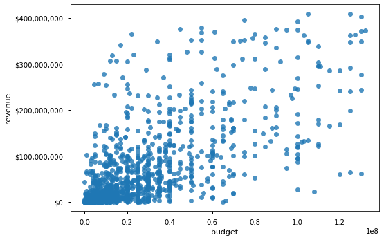
Demonstrating how the Model Makes Predictions#
## Get the model params
f = "revenue~budget"
model = smf.ols(f,df_clean).fit()
display(model.summary())
sm.graphics.qqplot(model.resid,dist=stats.norm,line='45',fit=True);
sm.graphics.plot_regress_exog(model,'budget',plt.figure(figsize=(12,8)));
| Dep. Variable: | revenue | R-squared: | 0.439 |
|---|---|---|---|
| Model: | OLS | Adj. R-squared: | 0.439 |
| Method: | Least Squares | F-statistic: | 881.0 |
| Date: | Wed, 07 Apr 2021 | Prob (F-statistic): | 1.98e-143 |
| Time: | 14:43:47 | Log-Likelihood: | -21900. |
| No. Observations: | 1126 | AIC: | 4.380e+04 |
| Df Residuals: | 1124 | BIC: | 4.381e+04 |
| Df Model: | 1 | ||
| Covariance Type: | nonrobust |
| coef | std err | t | P>|t| | [0.025 | 0.975] | |
|---|---|---|---|---|---|---|
| Intercept | 1.332e+07 | 2.86e+06 | 4.649 | 0.000 | 7.7e+06 | 1.89e+07 |
| budget | 2.1166 | 0.071 | 29.682 | 0.000 | 1.977 | 2.257 |
| Omnibus: | 290.848 | Durbin-Watson: | 1.675 |
|---|---|---|---|
| Prob(Omnibus): | 0.000 | Jarque-Bera (JB): | 825.435 |
| Skew: | 1.306 | Prob(JB): | 5.74e-180 |
| Kurtosis: | 6.282 | Cond. No. | 5.70e+07 |
Notes:
[1] Standard Errors assume that the covariance matrix of the errors is correctly specified.
[2] The condition number is large, 5.7e+07. This might indicate that there are
strong multicollinearity or other numerical problems.


coeffs = dict(model.params)
coeffs
{'Intercept': 13317773.03019375, 'budget': 2.116604190730345}
## Calcualte y_hat using the model's coefficients
# y = mx +b
y_hat = coeffs['budget'] * df_clean['budget'] + coeffs['Intercept']
y_hat
3 3.871702e+07
10 2.884763e+08
11 1.932291e+08
14 1.593635e+08
15 1.191480e+08
...
1295 3.236721e+07
1296 4.633680e+07
1297 1.342360e+07
1298 4.083363e+07
1299 1.331787e+07
Name: budget, Length: 1126, dtype: float64
## get preds from model
y_hat_model= model.predict(df_clean)
y_hat_model
3 3.871702e+07
10 2.884763e+08
11 1.932291e+08
14 1.593635e+08
15 1.191480e+08
...
1295 3.236721e+07
1296 4.633680e+07
1297 1.342360e+07
1298 4.083363e+07
1299 1.331787e+07
Length: 1126, dtype: float64
## Visualize Predictions vs Original Data
plt.scatter(df_clean['budget'],df_clean['revenue'])
plt.scatter(df_clean['budget'],y_hat, label='by hand')
plt.scatter(df_clean['budget'],y_hat_model, label='from_model',color='green',
s=2)
plt.legend()
<matplotlib.legend.Legend at 0x7fe0a3dc9fa0>
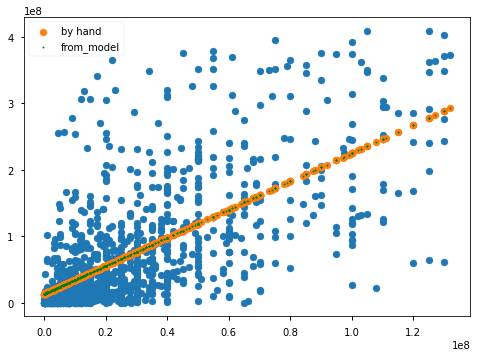
Further attempts to make normal?#
df_log = df_clean[['revenue','budget']].copy()
df_log['budget_log'] = np.log(df_log['budget'])
df_log['revenue_log'] = np.log(df_log['revenue'])
# df_log = np.log(df_log)
df_log
| revenue | budget | budget_log | revenue_log | |
|---|---|---|---|---|
| 3 | 100000000 | 12000000 | 16.300417207752275 | 18.420680743952367 |
| 10 | 403170142 | 130000000 | 18.683045008419857 | 19.81486921940004 |
| 11 | 358375603 | 85000000 | 18.258161814454592 | 19.69709216476144 |
| 14 | 116471580 | 69000000 | 18.049617062561534 | 18.5731578527119 |
| 15 | 234989584 | 50000000 | 17.72753356339242 | 19.275051747721868 |
| ... | ... | ... | ... | ... |
| 1295 | 4612788 | 9000000 | 16.012735135300492 | 15.344343004406076 |
| 1296 | 11620337 | 15600000 | 16.562781472219765 | 16.268267310688667 |
| 1297 | 359377 | 50000 | 10.819778284410283 | 12.792127255735657 |
| 1298 | 13000000 | 13000000 | 16.38045991542581 | 16.38045991542581 |
| 1299 | 5 | 46 | 3.828641396489095 | 1.6094379124341003 |
1126 rows × 4 columns
fig,ax = plt.subplots(ncols=2,figsize=(10,5))
sns.regplot(data=df_clean,x='budget',y='revenue',ax=ax[0])
sns.regplot(data=df_log,x='budget',y='revenue',ax=ax[1])
<AxesSubplot:xlabel='budget', ylabel='revenue'>
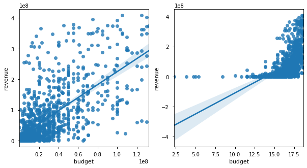
sg.plot_distribution(df_log,'budget')
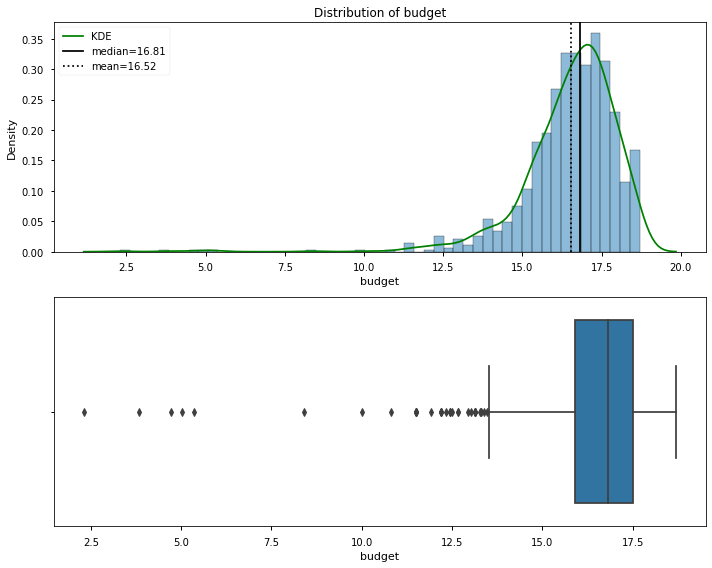
[i] Distribution Stats:
Skew = -2.93
Kurtosis = 18.06
N = 1,126
NormaltestResult(statistic=784.589254616214, pvalue=4.252145137672863e-171)
- p<.05: The distribution is NOT normally distributed.
(<Figure size 720x576 with 2 Axes>,
array([<AxesSubplot:title={'center':'Distribution of budget'}, xlabel='budget', ylabel='Density'>,
<AxesSubplot:xlabel='budget'>], dtype=object))
f = "revenue~budget"
model = smf.ols(f,df_log).fit()
display(model.summary())
sm.graphics.qqplot(model.resid,dist=stats.norm,line='45',fit=True);
sm.graphics.plot_regress_exog(model,'budget',plt.figure(figsize=(12,8)));
| Dep. Variable: | revenue | R-squared: | 0.232 |
|---|---|---|---|
| Model: | OLS | Adj. R-squared: | 0.232 |
| Method: | Least Squares | F-statistic: | 340.5 |
| Date: | Wed, 07 Apr 2021 | Prob (F-statistic): | 1.29e-66 |
| Time: | 14:57:07 | Log-Likelihood: | -22077. |
| No. Observations: | 1126 | AIC: | 4.416e+04 |
| Df Residuals: | 1124 | BIC: | 4.417e+04 |
| Df Model: | 1 | ||
| Covariance Type: | nonrobust |
| coef | std err | t | P>|t| | [0.025 | 0.975] | |
|---|---|---|---|---|---|---|
| Intercept | -3.887e+08 | 2.52e+07 | -15.445 | 0.000 | -4.38e+08 | -3.39e+08 |
| budget | 2.799e+07 | 1.52e+06 | 18.452 | 0.000 | 2.5e+07 | 3.1e+07 |
| Omnibus: | 326.917 | Durbin-Watson: | 1.481 |
|---|---|---|---|
| Prob(Omnibus): | 0.000 | Jarque-Bera (JB): | 743.203 |
| Skew: | 1.607 | Prob(JB): | 4.13e-162 |
| Kurtosis: | 5.348 | Cond. No. | 177. |
Notes:
[1] Standard Errors assume that the covariance matrix of the errors is correctly specified.
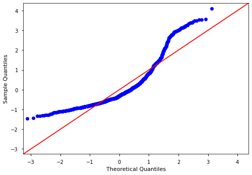
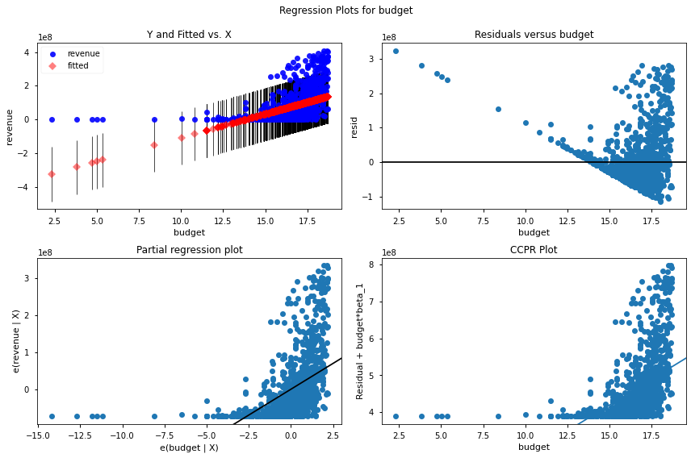
f = "revenue_log~budget_log-1"
model = smf.ols(f,df_log).fit()
display(model.summary())
sm.graphics.qqplot(model.resid,dist=stats.norm,line='45',fit=True);
sm.graphics.plot_regress_exog(model,'budget_log',plt.figure(figsize=(12,8)));
| Dep. Variable: | revenue_log | R-squared (uncentered): | 0.987 |
|---|---|---|---|
| Model: | OLS | Adj. R-squared (uncentered): | 0.987 |
| Method: | Least Squares | F-statistic: | 8.394e+04 |
| Date: | Wed, 07 Apr 2021 | Prob (F-statistic): | 0.00 |
| Time: | 15:04:07 | Log-Likelihood: | -2351.1 |
| No. Observations: | 1126 | AIC: | 4704. |
| Df Residuals: | 1125 | BIC: | 4709. |
| Df Model: | 1 | ||
| Covariance Type: | nonrobust |
| coef | std err | t | P>|t| | [0.025 | 0.975] | |
|---|---|---|---|---|---|---|
| budget_log | 1.0165 | 0.004 | 289.726 | 0.000 | 1.010 | 1.023 |
| Omnibus: | 523.220 | Durbin-Watson: | 1.758 |
|---|---|---|---|
| Prob(Omnibus): | 0.000 | Jarque-Bera (JB): | 4469.960 |
| Skew: | -1.944 | Prob(JB): | 0.00 |
| Kurtosis: | 11.953 | Cond. No. | 1.00 |
Notes:
[1] R² is computed without centering (uncentered) since the model does not contain a constant.
[2] Standard Errors assume that the covariance matrix of the errors is correctly specified.
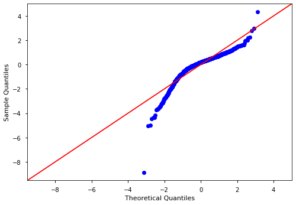
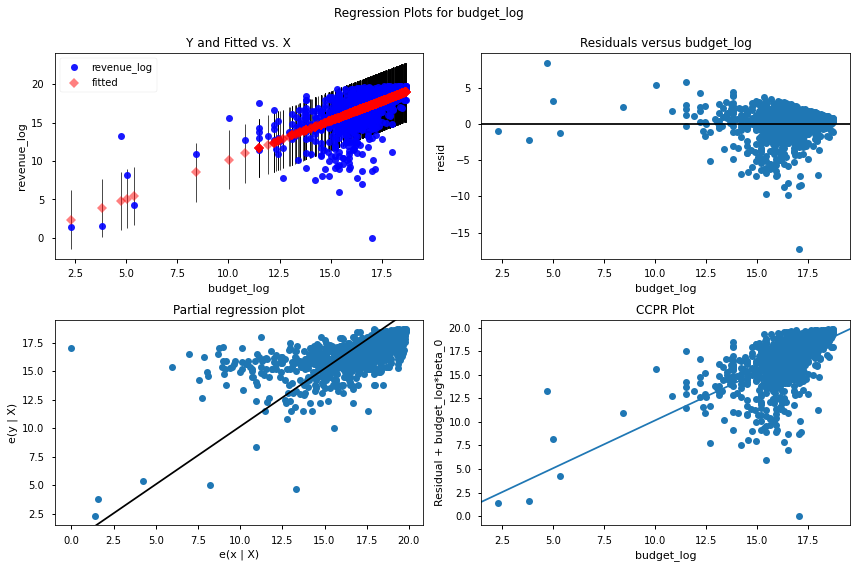
pd.set_option('display.float_format', lambda x: f"{x:,}")
model.params
budget_log 1.0164986247605352
dtype: float64
There are some manipulations we can do to make the data more normally distributed.
If there’s time we can start to walk through this, otherwise it will be part of tomorrow’s study group
## Non-formula OLS
from statsmodels.regression.linear_model import OLS
X = df_clean['budget']
y = df_clean['revenue']
X = sm.add_constant(X)
X
| const | budget | |
|---|---|---|
| 3 | 1.0 | 12000000 |
| 10 | 1.0 | 130000000 |
| 11 | 1.0 | 85000000 |
| 14 | 1.0 | 69000000 |
| 15 | 1.0 | 50000000 |
| ... | ... | ... |
| 1295 | 1.0 | 9000000 |
| 1296 | 1.0 | 15600000 |
| 1297 | 1.0 | 50000 |
| 1298 | 1.0 | 13000000 |
| 1299 | 1.0 | 46 |
1126 rows × 2 columns
X
| const | budget | |
|---|---|---|
| 3 | 1.0 | 12000000 |
| 10 | 1.0 | 130000000 |
| 11 | 1.0 | 85000000 |
| 14 | 1.0 | 69000000 |
| 15 | 1.0 | 50000000 |
| ... | ... | ... |
| 1295 | 1.0 | 9000000 |
| 1296 | 1.0 | 15600000 |
| 1297 | 1.0 | 50000 |
| 1298 | 1.0 | 13000000 |
| 1299 | 1.0 | 46 |
1126 rows × 2 columns
model2 = OLS(y,X).fit()
model2.summary()
| Dep. Variable: | revenue | R-squared: | 0.439 |
|---|---|---|---|
| Model: | OLS | Adj. R-squared: | 0.439 |
| Method: | Least Squares | F-statistic: | 881.0 |
| Date: | Wed, 07 Apr 2021 | Prob (F-statistic): | 1.98e-143 |
| Time: | 15:28:48 | Log-Likelihood: | -21900. |
| No. Observations: | 1126 | AIC: | 4.380e+04 |
| Df Residuals: | 1124 | BIC: | 4.381e+04 |
| Df Model: | 1 | ||
| Covariance Type: | nonrobust |
| coef | std err | t | P>|t| | [0.025 | 0.975] | |
|---|---|---|---|---|---|---|
| const | 1.332e+07 | 2.86e+06 | 4.649 | 0.000 | 7.7e+06 | 1.89e+07 |
| budget | 2.1166 | 0.071 | 29.682 | 0.000 | 1.977 | 2.257 |
| Omnibus: | 290.848 | Durbin-Watson: | 1.675 |
|---|---|---|---|
| Prob(Omnibus): | 0.000 | Jarque-Bera (JB): | 825.435 |
| Skew: | 1.306 | Prob(JB): | 5.74e-180 |
| Kurtosis: | 6.282 | Cond. No. | 5.70e+07 |
Notes:
[1] Standard Errors assume that the covariance matrix of the errors is correctly specified.
[2] The condition number is large, 5.7e+07. This might indicate that there are
strong multicollinearity or other numerical problems.
Model Validation#
from sklearn.model_selection import train_test_split
from sklearn.metrics import r2_score
X_train,X_test, y_train, y_test=train_test_split(X,y,random_state=42)
X_train.shape, X_test.shape
((844, 2), (282, 2))
model2 = OLS(y_train,X_train).fit()
model2.summary()
| Dep. Variable: | revenue | R-squared: | 0.475 |
|---|---|---|---|
| Model: | OLS | Adj. R-squared: | 0.474 |
| Method: | Least Squares | F-statistic: | 761.6 |
| Date: | Wed, 07 Apr 2021 | Prob (F-statistic): | 6.43e-120 |
| Time: | 15:34:25 | Log-Likelihood: | -16396. |
| No. Observations: | 844 | AIC: | 3.280e+04 |
| Df Residuals: | 842 | BIC: | 3.281e+04 |
| Df Model: | 1 | ||
| Covariance Type: | nonrobust |
| coef | std err | t | P>|t| | [0.025 | 0.975] | |
|---|---|---|---|---|---|---|
| const | 1.001e+07 | 3.25e+06 | 3.083 | 0.002 | 3.64e+06 | 1.64e+07 |
| budget | 2.2005 | 0.080 | 27.598 | 0.000 | 2.044 | 2.357 |
| Omnibus: | 196.208 | Durbin-Watson: | 2.061 |
|---|---|---|---|
| Prob(Omnibus): | 0.000 | Jarque-Bera (JB): | 535.171 |
| Skew: | 1.173 | Prob(JB): | 6.15e-117 |
| Kurtosis: | 6.116 | Cond. No. | 5.79e+07 |
Notes:
[1] Standard Errors assume that the covariance matrix of the errors is correctly specified.
[2] The condition number is large, 5.79e+07. This might indicate that there are
strong multicollinearity or other numerical problems.
y_hat_train = model2.predict(X_train)
r2_score(y_train, y_hat_train)
0.47494016947658424
y_hat_test = model2.predict(X_test)
r2_score(y_test, y_hat_test)
0.3204718767123673
APPENDIX#
Covariance#
In some cases, you’ll want to look at two variables to get an idea about how they change together. In statistics, when trying to figure out how two variables vary together, you can use the covariance between these variables.
If you have \(X\) and \(Y\), two variables having \(n\) elements each. You can calculate covariance (\(\sigma_{xy}\)) between these two variables by using the formula:
\(\sigma_{XY}\) = Covariance between \(X\) and \(Y\)
\(x_i\) = ith element of variable \(X\)
\(y_i\) = ith element of variable \(Y\)
\(n\) = number of data points (\(n\) must be same for \(X\) and \(Y\))
\(\mu_x\) = mean of the independent variable \(X\)
\(\mu_y\) = mean of the dependent variable \(Y\)
You can see that the formula calculates the variance of \(X\) and \(Y\) by multiplying the variance of each of their corresponding elements. Hence the term covariance.
Interpreting covariance values#
Covariance values range from positive infinity to negative infinity.
A positive covariance indicates that two variables are positively related
A negative covariance indicates that two variables are inversely related
A covariance equal or close to 0 indicates that there is no linear relationship between two variables
Correlation#
Correlation is calculated by standardizing covariance by some measure of variability in the data. It produces a quantity that has intuitive interpretations and consistent scale.
Pearson’s correlation coefficient ( \(r\) )#
Pearson Correlation Coefficient, \(r\), also called the linear correlation coefficient, measures the strength and the direction of a linear relationship between two variables. This coefficient quantifies the degree to which a relationship between two variables can be described by a line.
Pearson Correlation (\(r\)) is calculated using following formula :
So just like in the case of covariance, \(X\) and \(Y\) are two variables having \(n\) elements each.
\(x_i\) = ith element of variable \(X\)
\(y_i\) = ith element of variable \(Y\)
\(n\) = number of data points (\(n\) must be same for \(X\) and \(Y\))
\(\mu_x\) = mean of the independent variable \(X\)
\(\mu_y\) = mean of the dependent variable \(Y\)
\(r\) = Calculated Pearson Correlation
The Pearson Correlation formula always gives values in a range between -1 and 1

Correlation is not causation#
Causation is when any change in the value of one variable leads to a change in the value of another variable, which means one variable causes the change in another. This is also referred to as cause and effect.
Example 1: Ice cream sales are correlated with the number of homicides in New York#